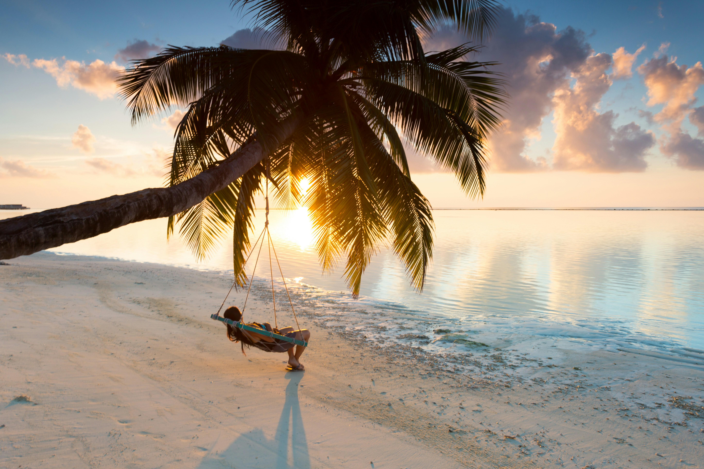
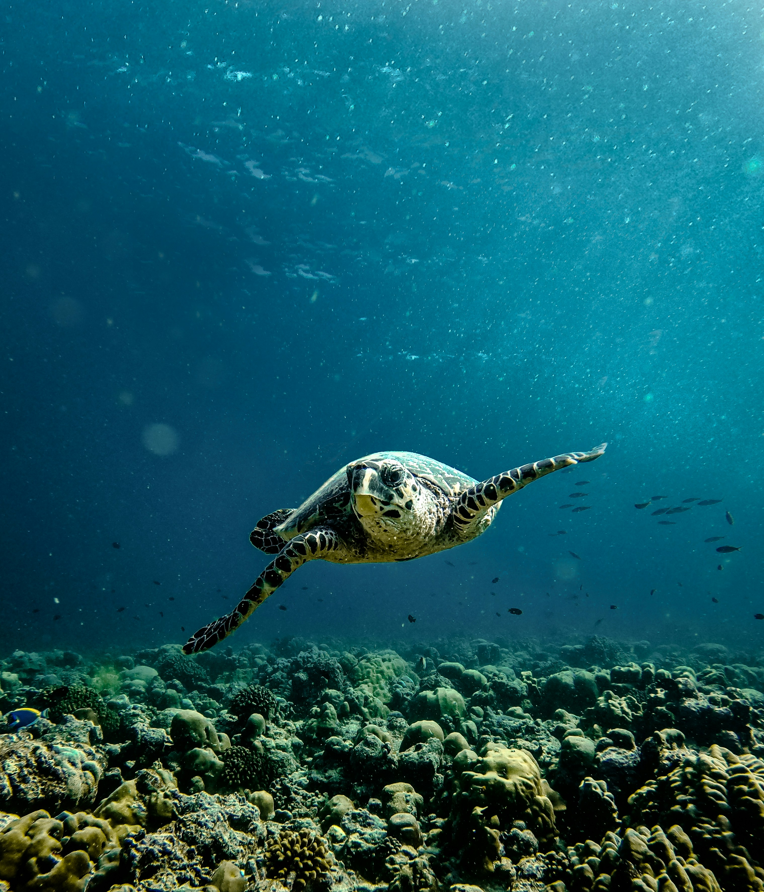
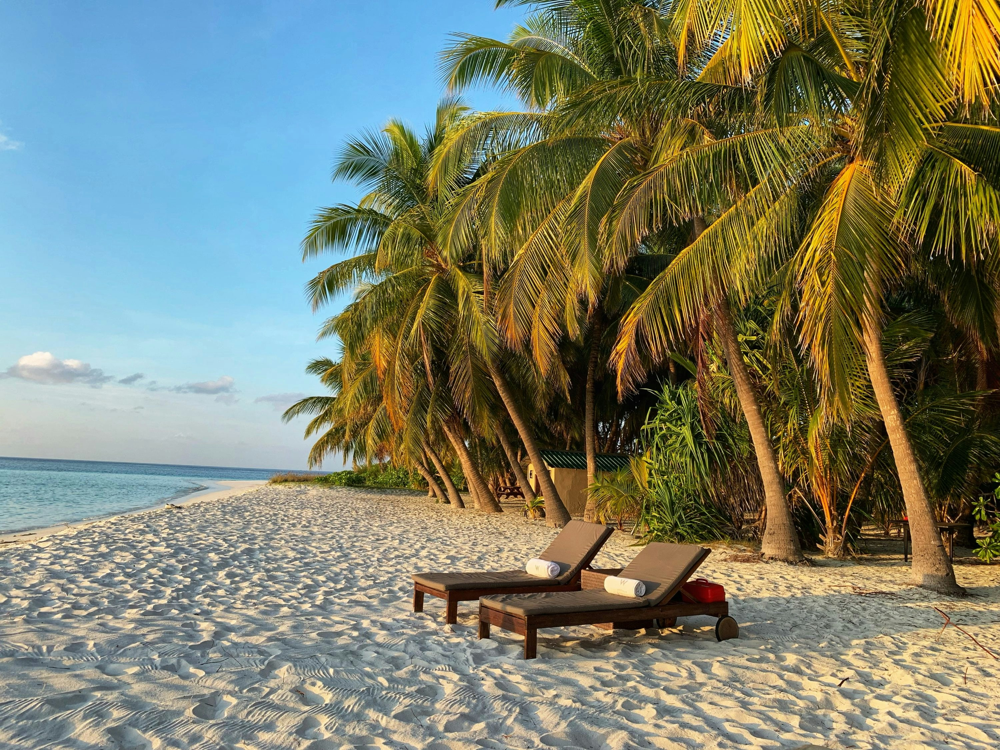
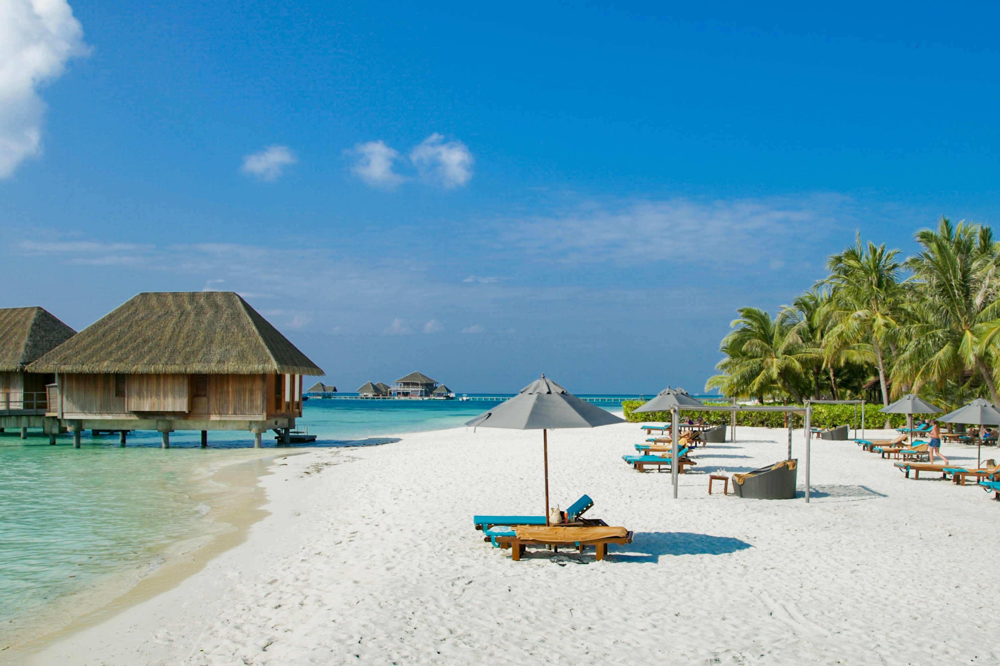
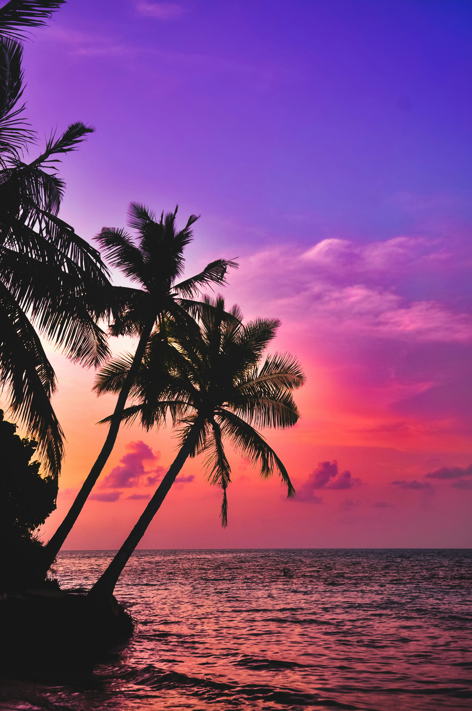

The Active Oasis: Malé Atoll
The Active Oasis: Malé Atoll
01. The Magical Arrival & Island Flow
A Seamless Transition to the Waves
The enchantment of a bespoke Maldivian voyage begins the moment your wheels touch down at Malé International Airport. Bypassing the standard fleet of urban taxis, guests are met directly at the terminal jetty by private speedboats. This instant connection to the water transforms your arrival into a magical, nautical procession, sweeping you across the North Malé Atoll to the reimagined shores of Club Med Kani in a breathtaking 35-minute transit.


Balancing Vibrant Energy with Solitude
Historically associated with vibrant, high-energy getaways, the property has masterfully preened its portfolio to emerge as a premium, multi-generational retreat. For the discerning traveler who might initially be skeptical of structured resort agendas, the beauty lies in the flawless integration of privacy and play. At one end of the palm-fringed island, premium overwater suites raised on architectural stilts offer exclusive sanctuaries, private beach patios, and a dedicated clubhouse serving Champagne as twilight paints the horizon.
02. Immersive Marine Explorations
Venturing into the Liquid Turquoise
To experience the Maldives purely from the shore is to miss half of its story. The archipelago's 26 ring-shaped coral atolls harbor some of earth's most spectacular clear marine lagoons. Slipping into the warm waves reveals an active sanctuary. Guided water excursions match you with majestic sea turtles and schools of kaleidoscope fish, while customized paddleboarding pathways invite you to test your balance, letting you hover gracefully over deep, ink-blue marine drop-offs.

High-Adrenaline Aerial Transitions
For brave souls seeking an entirely unique perspective, avant-garde flyboarding excursions offer an unbelievable gravity-defying thrill. Propelled by powerful water jets, you soar into the air, hovering high above the glassy lagoons. This aerial drama transforms into beachside theater by nightfall, where elite specialized performers execute illuminated acrobatics over the water, providing an unforgettable backdrop to curated, open-air gourmet dining on the sand.
03. Conscious Luxury & Holistic Wellness
Conscious Alliances: Coral Propagation
True luxury travel must be intentional and deeply respectful of the delicate ecosystem it enjoys. While warming global currents have caused bleaching along the reefs, a sophisticated partnership with marine biologists from SeaMarc invites guests to participate in real-time ecological restoration. Discerning travelers can actively attach live coral fragments to dome-shaped incubation frames, which are then placed on the seabed. Over two years, these domes develop into vibrant, thriving aquatic nurseries, restoring life to the surrounding marine architecture.



Culinary Craft & Deep Restoration
The culinary canvas matches the resort's diverse global flair, offering custom culinary stations where international chefs prepare everything from fresh sashimi to tailored Mediterranean fare. Parents can rest easy knowing that dedicated children’s centers expertly keep younger explorers engaged in marine crafts, leaving adults completely free to indulge in deeply restorative wellness treatments. An 80-minute Balinese massage punctuated by native birdsong and warm ginger tea serves as the perfect conclusion to an extraordinarily dynamic island itinerary.